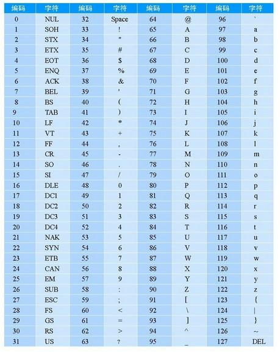

使用常量定义字符串和使用new关键字定义字符的区别？
var str = new String("abc"); //表示创建一个对象， object类型
var str2 = "abc"; //创建一个字符串， string类型
典型问题：
var s1 = "abc"; //栈内存
var s2 = "abc"; //栈内存
var s3 = new String("abc");
var s4 = new String("abc");
s1==s2 //true
s1==s3 //true
s3==s4 //false; 堆内存当中，两个对象
字符串的常见截取方法
//获取第几个字符
charAt(index)
//获取某个字符的ascii码
charCodeAt（index）
//将ascii码转为字符
String.fromCharCode(97)
//截取部分
substring(start,end)
//分割字符串
split("-")
什么是ascii码？
每个计算机符号所对应的二进制的数字
总共有256个，（全球统一）
在ASCII基础之上扩展出来的更多的符号编码，诞生了字符集
ISO-8859-1
GBK
GB2312
为了解决编码不统一的问题，发明了unicode
也就是我们现在所使用的utf-8
-8 -16有什么区别？？
utf-8相对于utf-16更节省空间

字符集是什么？
在ascii码基础之上扩展出来的符号标准, 不同国家的标准不一样，因此产生了各种各样的字符集
字符串替换（敏感词过滤） replace
replace(要替换的内容, 替换后的内容); //在不使用正则表达式时，无法进行全局替换,
也就是说，只能替换查找到的第一个目标
//使用正则做全局替换
var reg = new RegExp("图片","g"); //第二个参数g ，表示全局Global搜索的意思
str.replace(reg, "<img src='xxxx.jpg'/>");
注： replace()不会对原字符串做任何修改，而是生成新的字符串并返回
Math内置对象的常见API
Math.random() 取值范围[0~1)
Math.round() 四舍五入
Math.max() 求最大值
Math.min() 求最小值
Math.abs() 求绝对值
Math.sqrt() 求开平方
Math.pow(x,y) x的y次方
Math.floor() 向下取整
Math.ceil() 向上取整
三角函数
Math.sin()
Math.cos()
Math.tan()

尝试使用DIV画出 正弦曲线
console.log() 增加样式
console.log("%c 你好红色微软雅黑","color:red; font-size:20px; font-family:微软雅黑");